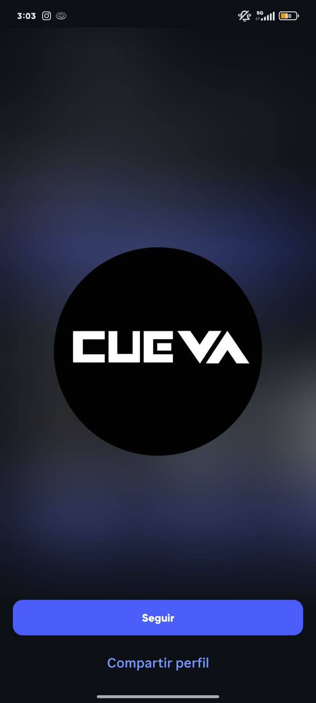
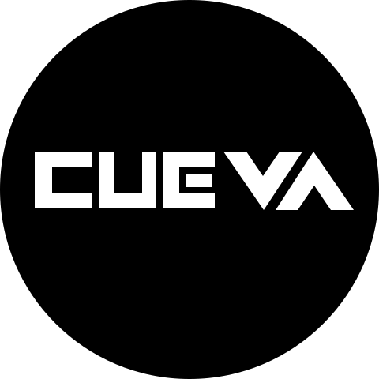

Izquierda: región del símbolo en la referencia original, presentada mediante una ventana CSS. Derecha: SVG de aplicación, reconstrucción provisional. No se identifica una fuente ni se afirma disponer del archivo maestro.


Conserva C y U rectilíneas, E con barra central separada, V angular y A sin travesaño, el espaciado y la silueta blanca sobre círculo negro. Los bordes del JPEG no permiten asegurar igualdad geométrica exacta. La fidelidad y el maestro definitivo quedan sujetos a revisión independiente.